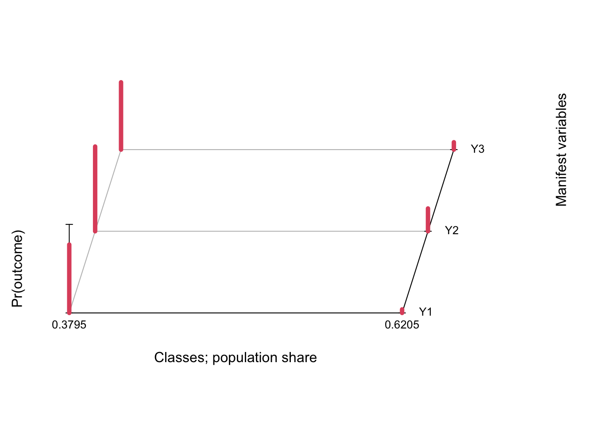

Anti-religious speech
Read the data from the General Social Survey 1987. It’s not old, it’s a classic!
Y1 Y2 Y3
1 1 1 1
2 1 1 1
3 1 1 1
4 1 1 1
5 1 1 1
6 1 1 1Show the data as pattern frequencies.
| Y1 | Y2 | Y3 | Freq |
|---|---|---|---|
| 1 | 1 | 1 | 696 |
| 2 | 1 | 1 | 34 |
| 1 | 2 | 1 | 275 |
| 2 | 2 | 1 | 125 |
| 1 | 1 | 2 | 68 |
| 2 | 1 | 2 | 19 |
| 1 | 2 | 2 | 130 |
| 2 | 2 | 2 | 366 |
Fit the model using poLCA.
Conditional item response (column) probabilities,
by outcome variable, for each class (row)
$Y1
Pr(1) Pr(2)
class 1: 0.2284 0.7716
class 2: 0.9601 0.0399
$Y2
Pr(1) Pr(2)
class 1: 0.0429 0.9571
class 2: 0.7424 0.2576
$Y3
Pr(1) Pr(2)
class 1: 0.2395 0.7605
class 2: 0.9166 0.0834
Estimated class population shares
0.3795 0.6205
Predicted class memberships (by modal posterior prob.)
0.3736 0.6264
=========================================================
Fit for 2 latent classes:
=========================================================
number of observations: 1713
number of estimated parameters: 7
residual degrees of freedom: 0
maximum log-likelihood: -2795.376
AIC(2): 5604.751
BIC(2): 5642.873
G^2(2): 4.683779e-10 (Likelihood ratio/deviance statistic)
X^2(2): 4.375393e-10 (Chi-square goodness of fit)
Here is the default plot given by polCA.
plot(fit)
In this case the default plot is still somewhat readable, but in practice it is not the best as data visualizations go. A simple line plot does a better job (in my personal & completely subjective opinion!) and allows you to display confidence intervals to boot. We use tidy from the broom package to extract the results and ggplot to plot.
tidy(fit) %>%
filter(outcome == 2) %>%
mutate(class = as.factor(class)) %>%
ggplot(aes(variable, estimate, group = class, color = class)) +
geom_point() + geom_line() +
geom_errorbar(aes(ymin = estimate - 2*std.error,
ymax = estimate + 2*std.error), width = 0.2) +
theme_bw() + scale_color_brewer(palette = "Set2")
You can play around with the implied probabilities in the Excel file https://daob.nl/files/lca/antirel2.xlsx (thanks to Jeroen Vermunt).